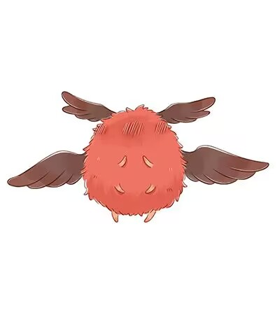
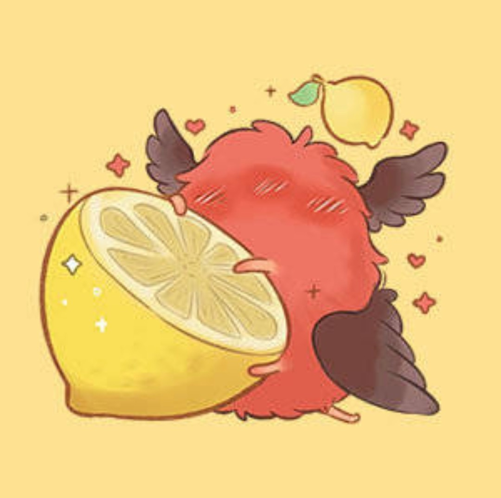
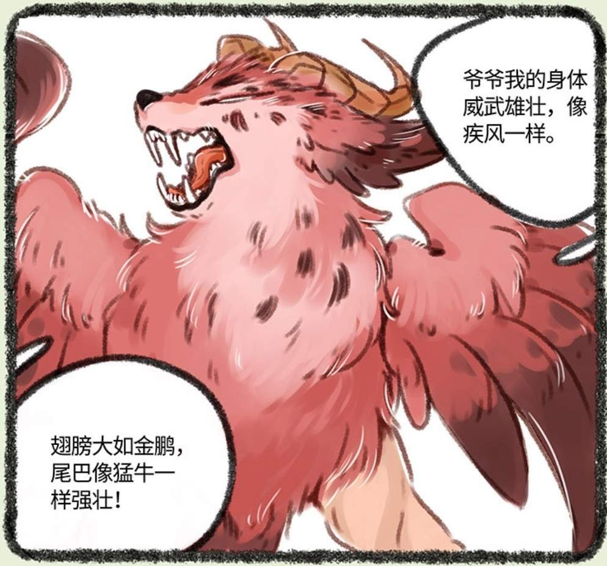
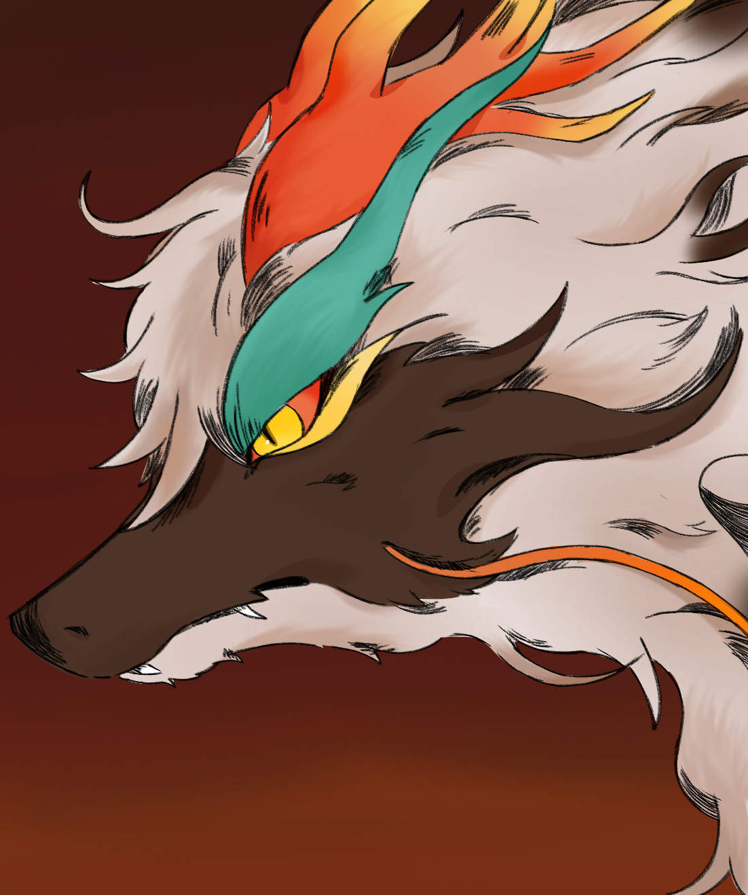

貔貅兄弟
辟邪 × 天禄
"辟邪很是自信的表示自己是哥哥，哥哥会保护弟弟的。"
—— 混沌初分，鸿蒙始判，天地未开之际
—— 混沌初分，鸿蒙始判，天地未开之际

辟邪
兄 · 暴躁护短
❤

天禄
弟 · 豪爽贪吃
兄弟档案
同卵双生，性格迥异，命运交织
辟邪
别称：小梅花、恶犬、疯狗
性别雄性
生日4月5日
星座白羊座
物种貔貅
首次登场第97话（露角）
眼睛金色渐变绿色
特征左耳缺口、臀部梅花纹
性格暴躁、护短、傲娇
食物金玉（与天禄相同），后因金玉耗尽改食恶灵
配音山新
知音花椒
VS
天禄
别称：皮皮
性别雄性
生日4月5日
星座白羊座
物种貔貅
首次登场第1话
眼睛绿色渐变金色
特征蓝色云纹角、贪吃
性格豪爽、贪吃、直率
食物金玉
配音杨凝（动画）/ 海绵（有声漫画）
所在地鹿人店/彩云山脉
千年羁绊
从同一颗蛋中诞生，跨越千年的兄弟情
上古篇 · 诞生（第140话起）
同卵双生
混沌初分，鸿蒙始判，天地未开之际，辟邪与天禄先后从同一颗双黄蛋中诞生。辟邪先破壳而出，自信地说："我是哥哥，哥哥会保护弟弟的。"天禄则回怼："什么哥哥，不过就早出壳几秒钟而已。"
上古篇 · 命名（第140话）
苍天老登的恶趣味
蛋壳上有两段语音，天禄选了14秒的那段，得名"天禄"；辟邪选了17秒的那段，得名"辟邪"。紧接着蛋壳自毁爆炸，貔貅兄弟有了自己的名字，也背负起了各自不同的命运。
上古篇 · 四兽家庭（第140-200话）
帝江与混沌
辟邪外出觅食时，天禄结识了帝江。辟邪起初将她当做怪物，检查无害后才接纳。后来帝江拐回了混沌，四兽家庭正式组成。混沌打出一个爪爪山洞，四只神兽一起度过了漫长的光阴。
上古篇 · 悲剧（第191-200话）
九乌陨落
因后羿射日，九乌陨落。帝江放走了最后一只三足金乌金十，从而死亡。混沌试图追回金乌，消失不见。貔貅兄弟开始了漫长的等待，睡在帝江的怀里，长睡不醒，一等经年。
中古篇 · 失散（第261-262话）
山沟分离
一睡几百年，辟邪种下一颗种子标记帝江长眠之地。跨越山沟时天禄爪滑坠落，与辟邪失散。辟邪崩溃哭泣，被一只麒麟——四不相——救起。最终在麒麟洞重逢，喜极而泣的兄弟紧紧拥抱，发誓永远不分离。
中古篇 · 名场面（第284-300话）
被雷劈的貔咔貅
天禄好奇四不相的来历，得知是两只麒麟生的后，若有所思地说："两只麒麟在一起能生出另一只麒麟，那我和辟邪在一起就能生出另一只貔……"话还没说完，天道便劈下一雷。此后天禄多次尝试不同组合，每次说到天禄和辟邪能生蛋时依旧被雷劈。（骨科党的痛）
中古篇 · 护兄（第368-376话）
为保护四不相失去左耳
回到帝江长眠之地时遇到三小只和混沌。试图挖出帝江却只挖出光芒，混沌彻底发疯化作彩云山脉。辟邪为保护四不相被饕餮咬掉一小块左耳，发怒变大身体打败三小只。
近古篇 · 牺牲（第414-459话）
假装吃掉金球球
貔貅兄弟饿倒在山中。辟邪为了让天禄吃到更多食物，每次都假装吃掉金球球，再趁天禄不注意吐回去。长此以往辟邪饿到口吐紫液、爪垫发紫、浑身无力。天禄发现后为清掉辟邪体内的恶灵吃掉了所有剩余食物。
近古篇 · 猎龙（第454-500话）
天禄为辟邪猎杀烛龙
为让辟邪恢复健康，天禄执意要去猎杀烛龙取肉。四不相带着天禄前去寻龙，天禄一口咬断烛龙一条龙须。被激怒的烛龙将他们吞进腹内，在烛龙腹中遇到了犼和王多足。
现代篇 · 暗线（第2-97话）
辟邪就在天禄肚子里
辟邪一直住在天禄的肚子里。第2话和第10话的雕像、第12话八斤询问天禄哥哥的去向、第36话饕餮提到"兄弟"、第38话食物列表中的神秘黑影、第84话国王游戏中众角色提到天禄的哥哥——第97话，天禄肚子里的金币堆中终于露出了辟邪的两角。
现代篇 · 暴怒（第500话）
辟邪得知天禄失忆
辟邪在第500话因得知天禄被天庭陷害后不记得自己而暴怒。经四不像劝说后开始与失忆的天禄交朋友，并试图让天禄找回记忆。天禄为辟邪准备了一个山洞作为他们貔貅兄弟的巢穴。
现代篇 · 心锁（第800-900话）
心锁动摇与破除
第800话，天禄看见镜子中四不像不是白色而是黄色，心锁开始动摇，抓伤四不像离开鹿人店。第900话，四不再隐瞒一切，摘掉面具坦白一切，天禄彻底破除心锁恢复记忆，选择离开前去寻找辟邪。
现代篇 · 团圆（第1000话）
千年后的团聚
第1000话，天禄和辟邪在帝江与混沌灵魂化成的光芒帮助之下终于团聚。面对辟邪的询问，天禄选择隐瞒四不相的事情。此后兄弟二人在彩云山脉生活。
经典语录
那些让人又哭又笑的兄弟日常
什么哥哥，不过就早出壳几秒钟而已。
—— 天禄
我是哥哥，哥哥会保护弟弟的。
—— 辟邪（刚出生时）
两只麒麟在一起能生出另一只麒麟，那我和辟邪在一起就能生出另一只貔……
—— 天禄（被雷劈前）
貔貅兄弟发誓，兄弟永远不分离。（某种意义上来说确实永远没有分离）
—— 中古篇·重逢
辟邪唱的歌很烂，让帝江饱受摧残，独自外出散步。
—— 上古篇日常
辟邪为了让天禄吃到更多的食物，每次都假装吃掉金球球，再趁着天禄不注意将金球球吐回去。
—— 近古篇（最催泪的细节）
长睡不醒，一等经年。
—— 帝江死后，貔貅兄弟的漫长等待
只进不出，只吃不拉。真·有口无肛门腔肠动物×2
—— wiki编辑的暴论
关系图谱
貔貅兄弟的重要羁绊
辟邪
哥哥
❤ 同卵双生 ❤
天禄
弟弟（皮皮）

帝江
挚友（已故）

混沌
家人（化作彩云山脉）

四不相
兄弟

饕餮
咬掉辟邪左耳

烛龙
天禄猎杀对象

七十七
同族
趣味知识
关于貔貅兄弟你可能不知道的事
🦄 貔貅没有肛门，只进不出。所以天禄吞了地图后取不出来——明知自己只进不出还吃地图的屑。
🎂 辟邪原本和天禄一样以金玉为食。后因金玉几乎被吃光，辟邪外出寻找食物时发现恶灵也能充饥，于是改食恶灵。而天禄至今仍以金玉为食。
🎧 辟邪唱歌非常难听，曾让帝江饱受摧残。帝江只好独自外出散步，结果遇到了混沌。
🐸 辟邪最初住在天禄的肚子里，并在那里养了很多鸡，也养过螃蟹（因喂食五仁月饼而死亡）。
🌊 辟邪的左耳缺口是被饕餮咬掉的，原因是辟邪为保护四不相与三小只开战。
⚡ 天禄每次试图说"天禄和辟邪能生蛋"都会被天道劈雷。试了三次，被劈了三次。天道：拒绝骨科。
😴 困兽岛其实是天禄的心锁梦境。作者靴猫和晓航曾在微博确认。第498话中核桃进入天禄梦境后表示"今晚也是铁笼梦呢"，第553话中远处小山沉没的场景疑似困兽岛最后沉没——据此可以认为困兽岛是天禄内心囚禁辟邪的具象化。